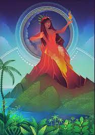

| Mitología | Dios principal | Atribución |
|---|---|---|
| Mexica | Huitzilopochtli | Sol, guerra, poder, venganza |
| Nordica | Odin | Sabiduría, magia, poesía |
| Grecolatina | Zeus | Cielo, rayo |
| Hinduista | Brahman | Universo, absoluto |
-

"Espejo humeante" es una deidad creadora mexica, patrono de los guerreros, encarnación del cambio a través del conflicto y parte de la dualidad vida/muerte.
Primogénito de Ometéotl, su color es el negro, su punto cardinal el norte y su animal espiritual el Jaguar, fue gobernante del primer sol y ayudó a crear el mundo del quinto sol usando su pierna como carnada para matar a Cipactli cuyo cuerpo se convertiría en la tierra la tierra, se le asocia con la magia, la noche, los nahuales y el destino, posee una daga de obsidiana tan afilada como “las palabras hirientes” y su espejo muestra la verdadera naturaleza de las personas, el destino y el pasado, además como cambia formas tiene varios avatares. -
Es el dios de la luna en la religión sintoísta japonesa, su nombre es una combinación de palabras japonesas antiguas siendo Tsuku "luna" y Yomi "leer, contar". Otra interpretación es "noche de luna" Tsukiyo y el verbo "mirar" mi.
Es el segundo de los "tres hijos nobles" nacidos de Izanagi, en algunas versiones está casado con su hermana mayor Amaterasu, en otras no, de cualquier manera ella lo envia como representante al banquete de la diosa Uke Mochi, Tsukuyomi al descubrir que la diosa sacaba la comida de partes de su cuerpo la asesina, esto da lugar a los alimentos fundamentales en esta cultura y también al mito del dia y la noche, ya que al enterarse de esto Amaterasu jura no volver a verlo, desde entonces Tsukuyomi cambia de forma para ganar su perdón y aunque en ocasiones se acercan (eclipses) ella nunca lo perdona del todo. -
“Padre de todo”, su nombre deriva del nórdico antiguo y se cree que significa frenesí, rabia o inspiración, dios principal de la mitología nórdica, de la sabiduría, la guerra, la muerte, la poesía, la magia, la profecía, la victoria y la caza, también es un cambia formas. Vivía en el palacio de Valaskjálf, en Asgard, su trono era Hliðskjálf, desde donde podía ver todo lo que sucedía en los nueve reinos, entre sus posesiones se encuentran: la lanza Gungnir, el anillo Draupnir, el corcel de ocho patas Sleipnir, sus cuervos, Hugin y Munin, que le transmitían lo que veían y sus lobos, Geri y Freki.
Hijo de Bor y la gigante Bestla, junto con sus hermanos Vili y Ve mató al gigante Ymir, formaron la tierra con su cuerpo y creando y dando regalos a la humanidad, esposo de Frigg, encargado de mandar a las valquirias por los guerreros caídos en batalla y recibirlos en el Valhalla, en él Ragnarök será asesinado y devorado por Fenrir.
En sus leyendas clásicas sacrificó su ojo izquierdo en el pozo de Mimir para acceder a la sabiduría infinita, se atravesó con su propia lanza y se colgó de Yggdrasil durante nueve días y noches para obtener el conocimiento de las runas convirtiéndose en el primer Erilaz, sedujo a Gunnlod para robar los tres recipientes de la hidromiel de la poesía y se dice que él lidera la Asgardsreien ó cacería salvaje. -

“La que da forma a la tierra sagrada”, diosa hawaiana del fuego, los volcanes, la danza, el relámpago y la violencia, creadora de las islas hawaianas, se le asocia con la creación, protección, renovación y empoderamiento, se considera que reside en él Kïlauea y es conocida por su poder, pasión, celos y caprichos.
Hija de espíritu Haumea (descendiente de la madre tierra) y Wakea (Padre cielo), en la mayoría de las leyendas Pele se muestra caprichosa e iracunda, hace un viaje en canoa y es asesinada por su hermana Namaka, sin embargo su espíritu reside en él Kïlauea. -
“El invisible” es hijo de los titanes Rea y Crono, fue devorado al nacer por su padre al igual que todos sus hermanos menos el menor, Zeus le dio un veneno a su padre y los regurgito, los cíclopes dan armas a los hermanos otorgando a Hades su casco de invisibilidad y dando inicio a la Titanomaquia, al ganar la guerra se reparte el mundo con Zeus y Poseidón siendo coronado como el gobernante del inframundo, posee un carro de caballos negro, su yelmo de invisibilidad, un bidente o báculo y las llaves del inframundo.
Su principal leyenda es en la que rapta a Perséfone, hija de Deméter, antes de salir del inframundo Hades da a Perséfone semillas de granada, por lo que ella debe permanecer parte del año con el como reina del inframundo, explicando el paso de la estaciones, alguno autores le atribuyen dos hijas Macaria y Melinoe, y dos amantes Minte la ninfa que fue transformada en menta y Leuce una oceánide que al morir fue transformada en un álamo blanco en los campos elíseos, pero en la mayoría de las versiones Hades no tiene ni hijos ni amantes. -

“Cornudo” dios astado galo asociado con la fertilidad, la naturaleza, los animales y el inframundo, el nombre aparece escrito en el “Pilier des Nautes” encontrado en una catedral antigua bajo Notre Dame, si bien se tienen pocos registros se le considera un dios pancéltico ya que la figura astada aparece con frecuencia por gran parte de europa con muchos otros nombres envolviendo al dios en un velo de misterio.
-
“Agua” También llamado Wakon, dios volador inca del viento y la lluvia, se creía que no tenía huesos y moldeaba la tierra a su voluntad, se representa volando con máscaras felinas y un báculo, tenía ojos prominentes, a veces se le representaba con rasgos de ave, una gran tormenta o remolino de arena, creó a los humanos proveyendo comida y protección, sin embargo ellos no lo adoraron por lo que retiró casi toda el agua dejando solo unos cuantos ríos, Pachacámac llegó del sur desterró a Kon, reformó la tierra a su gusto y transformó a los humanos de kon en diversos animales.
-

Es la diosa romana virgen de la caza, la naturaleza, la luna y las brujas, su equivalente griego es Artemisa (diosa de las transiciones), era alabada por su fuerza, gracia atlética, belleza y habilidades en la caza, se celebra un festival en su honor el 11 de Agosto y en la Ciudad de México hay una estatua en su honor.
-
“Reina espectral” diosa guerrera celta Irlandesa de la guerra, la muerte, la destrucción, la vida, la renovación, el amor y el deseo sexual, patrona de la venganza, la magia y la noche, hija de Ernmas y el dios hechicero Cailitin, se le representa portando armas y armadura, suele aparecer como cuervo o corneja pero puede cambiar de forma a voluntad, se cree que reside en una cueva en el condado de Roscommon al noreste de Irlanda y se dice que puede usar magia negra.
Morrigan forma una triada con sus hermanas Badb y Macha aunque en ocasiones se la describe como diosa triple incluyendo a sus hermanas como manifestaciones de sí misma, entre sus leyendas destaca su contribución con la muerte del héroe Cú Chulainn después de rechazarla, su unión con Dagda en la festividad de Samhain, y la historia del asesinato de su hijo Mechi que posee tres corazones, cada uno contiene una serpiente que de ser liberada ocasionaria desastres en Irlanda. -
?
-
?
-
?